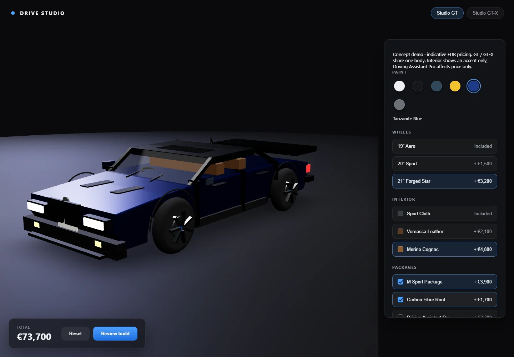

Featured project · Runtime screenshot
BMW Configurator / Drive Studio
A procedural 3D concept car with visible customization, indicative pricing and a build-summary dialog.
Local demonstration · Static runtime preview
View GitHub source
Problem
Visual selections and the quoted total must agree with the rendered car and build summary.
Architecture
A React interface shares configuration through Zustand; React Three Fiber renders one procedural body with local studio reflections.
Engineering decisions
- Render one procedural model and expose wheels through body openings.
- Validate package IDs and deduplicate charges.
- Honor reduced motion and separate the viewport from mobile controls.
Implemented workflow
- Paint, wheel and cabin-accent selections with reset.
- Build review lists current selections and exact illustrative EUR line items.
Verified result
14 unit tests, 12 desktop/mobile browser checks, lint and production build passed.
- Verification describes the prepared local checkout on 28–29 October 2026; it is not a production or business outcome claim.
- Prepared improvements have not been pushed; the public repository may differ from this runtime preview.
Scope and next steps
- Independent concept; no official BMW affiliation. Prices are illustrative, not dealer quotations.
- Two tiers share one stylized body; interior is an accent and driver assistance affects price only.
- No saved builds, checkout or backend. Inactive OBJ provenance is unverified; that asset is not reused here.
Technology
React · JavaScript · Three.js · React Three Fiber · GSAP · Zustand
Preview availability
Static runtime preview. No hosted interactive demo is available. The prepared improvements were verified in a local checkout and have not been pushed to GitHub; public source may differ from these captures. Use the repository documentation for the public version's setup requirements.
← Return to portfolio